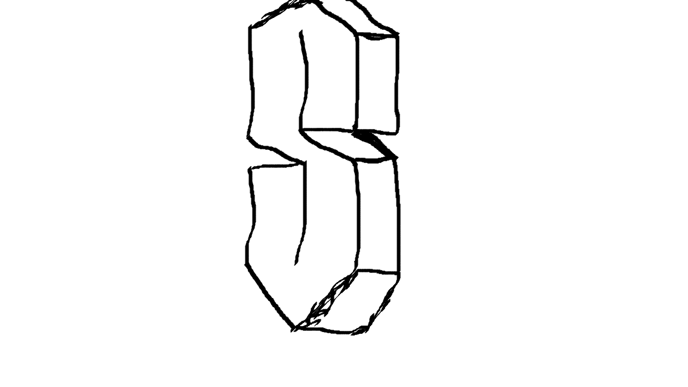

ENZO.
I am also sixhangman.
sixhangman
I'm not very good at this new system development thing but I always pay attention even with a lot of difficulty. I'm getting really interested even though sometimes it's quite boring and tedious, but it gets more challenging and intriguing more and more. and today on 05/04/23 I created a public site "sixhangman".
My Skills
systems developer
sites
hang

/i430404.jpeg)